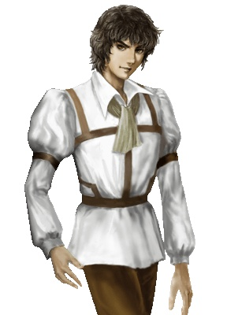

海員
卡米尔·马利奴斯·奥芬埃西 專屬 
费南德·迪阿斯
埃米利奥·菲隆
行久·玄丞·白木大阪 需要卡米爾在
乙凤·宋京城 廣場
尤里安·罗佩斯杭州 酒館 觸發劇情 京城 酒館 觸發劇情 進入 京城 遺跡 回到 杭州 酒館
科鲁罗·西奈特馬六甲 交易所
詹姆·杰克·鲁德韦需要卡米爾在 雅加達 旅館 觸發劇情 雅加達 酒館 觸發劇情
阿尔·菲利德·西恩查理 在主艦 巴斯拉 酒館
塞维·达·汉卡里亥特 廣場
曼努埃尔·阿尔米达聖喬治
易安·杜可夫索法拉 酒館
米哈易尔·勒茨東非港口 廣場
杰拿斯·帕沙里斯本 選擇 給錢(第一個選項)
弗利奥·埃涅科熱那亞 酒館
安杰洛·普契尼伊斯坦堡 碼頭
铁礼列·滕尼亞歷山大 碼頭
格尔哈特·阿迪肯漢堡
克丽丝汀娜·埃涅科-弗利奥在 北海 任意港口 出港 得知 美人在倫敦 前往 倫敦 加入之
查理·约翰·洛雪弗哈瓦那
東亞
北緯37 東經129 竹藝品的組合說明書： 在東南亞 揭穿 庫恩的 陰謀 華梅送出 (或者 在東亞 幹掉 華梅 獲取之) 唐代的竹藝品： 送 禮物給 大阪 酒吧 女孩 出現 遺跡 進入 買 1個米 1個砂糖 1個茶 得知 消息 到 中國最東北的村莊 獲取之 (北海道 北緯42 東經141) (科爾夫 北緯60 東經165)
東南亞
南幃2 東經126 裝有乳液的壺： 來到雅加達 庫恩要求 同盟 幹掉 普雷 幹掉 普雷 勢力第一 庫恩手下 來 挑撥 和 華梅的關係 到東亞 被華梅 邀請去 杭州 酒館 到杭州 酒館 華梅揭穿 庫恩 陰謀 到雅加達 觸發劇情 幹掉 庫恩 回雅加達 獲取之 (或者 幹掉 華梅後 等庫恩 宣戰 再幹掉 獲取之) 古代王國的錢幣： 送禮物給 馬六甲 酒館女孩(誓言戒指的劇本 易安在主艦 卡利亥特 廣場 獲取) 出現 遺跡 並進入 到 非洲 盧安達的交易所 得知 消息 到美洲 在聖多明尼加廣場 得到七色鸚鵡(安傑洛 在主艦) 到 哈瓦那 將 七色鸚鵡 送給 酒館 女孩 得知 美洲 最北的村莊 到 村莊 鱈角(北緯41 西經70) 得到煉金術的書 將 煉金術的書 給 非洲 索法拉 交易所 買 1個 白金 會回 馬六甲 遺跡
印度洋
北緯14 東經50 不枯萎的蓮葉： 到 卡利亥特 酒館 納哥普爾 商會找死 幹掉之 回 卡利亥特 酒館 獲取之 貴霜朝的大盤： 勢力第一 在錫蘭 酒館 得知 巴斯拉 工會 找 到 巴斯拉 工會 要求 買9種 香料 (錫蘭 買 肉桂 香草 東南亞 阿鎮 買 豆蔻 羅望子 東南亞 安勃那 買 胡椒 丁香 地中海 裏斯本 買 藏紅花 美洲 委拉克路斯 買 甜椒 美洲 美利達 買 辣椒) 買齊 香料 獲取之 到 卡利亥特工會 接到任務 要求 幹掉 海盜 雅克布 幹掉之 出現遺跡 進入 得到大鹫像
非洲
北緯6 東經2 神秘石板下半部： 來到 索法拉 酒館 發現 埃斯皮諾 是毒販 幹掉 之 回到 索法拉 獲取之 神秘石板上半部： 在聖喬治 送禮物給 酒吧 女孩 高麗青瓷香爐(北緯35 東經126) 第2次去 酒吧 出現 遺跡 進入 遺跡 獲取之